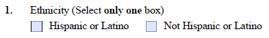
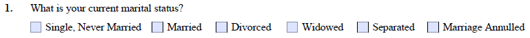
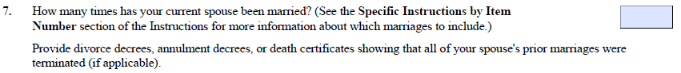

Understanding Interview Questions / Cómo entender las preguntas de la entrevista
N-400 Naturalization Interview Practice — Entrenamiento para la entrevista de naturalización
Understanding the meaning of interview questions.
The officer will read your N-400 and ask you about details in your data in the form. You should remember what is written in your N-400.
How to use: Read each paragraph, then 🔊 listen to the officer’s question. Select the best response for the person in the story. After you choose, you will see feedback in English and Spanish explaining why each option is good or needs improvement.
Comprender el significado de las preguntas de la entrevista.
El oficial leerá su formulario N-400 y le hará preguntas sobre los detalles de la información que figura en el mismo. Usted debe recordar lo que está escrito en su N-400.
Cómo utilizarlo: Lea cada párrafo y, a continuación, 🔊 escuche la pregunta del oficial. Seleccione la mejor respuesta para el/la persona en la historia. Después de elegir, verá comentarios en inglés y español que explican por qué cada opción es adecuada o requiere mejoras.
Scenario A — N-400 Part 3: Personal Information / Información personal
Ethnicity and Race / Etnicidad y raza
Rosa is from Guatemala. Her mother belongs to a Mayan indigenous community, but her family always identified themselves as "white" on official documents in their home country. On her N-400, Rosa listed her ethnicity as Hispanic or Latino and her race as White. The officer is reviewing her form at the start of the interview.
Rosa es de Guatemala. Su madre pertenece a una comunidad indígena maya, pero su familia siempre se identificó como "blanca" en los documentos oficiales de su país de origen. En su formulario N-400, Rosa indicó su etnicidad como Hispana o Latina y su raza como Blanca. El oficial está revisando su formulario al inicio de la entrevista.
Officer’s Question / Pregunta del oficial

Scroll to view full form / Deslice para ver el formulario completo
“I am Latina.” directly answers the question. Latina and Hispanic are both accepted terms for this ethnicity on the N-400. Either word is a complete, appropriate answer.
“Soy latina.” responde directamente la pregunta. Latina e Hispana son términos aceptados para esta etnicidad en el formulario N-400. Cualquiera de las dos palabras es una respuesta completa y apropiada.
✗ Needs improvement / Necesita mejorar
Memoriza los hechos y datos
“I’m not sure. My mother was indigenous, but we always called ourselves white.” — This confuses race and ethnicity. Ethnicity (Hispanic/Latino) describes a shared cultural and linguistic identity, not race. Rosa already answered this on her form and should know her own answer.
“No estoy segura. Mi madre era indígena, pero siempre nos llamamos blancos.” — Esta respuesta confunde raza y etnicidad. La etnicidad (hispana/latina) describe una identidad cultural y lingüística compartida, no la raza. Rosa ya respondió esto en su formulario y debe conocer su propia respuesta.
✗ Needs improvement / Necesita mejorar
Enfoca en la pregunta real
“We don’t belong to any ethnic group.” — This is factually incorrect for someone who identifies as Latina. Hispanic or Latino is an ethnicity listed on the N-400. The answer also uses "we" — the officer is asking about Rosa, not her family.
“No pertenecemos a ningún grupo étnico.” — Esto es factualmente incorrecto para alguien que se identifica como latina. Hispana o Latina es una etnicidad listada en el formulario N-400. Además, la respuesta usa "nosotros" — el oficial le pregunta a Rosa, no a su familia.
Scenario B — N-400 Part 5: Marital History / Historial matrimonial
Marital Status and Previous Marriages / Estado civil y matrimonios anteriores
Carmen has been divorced once and is now in a new marriage to David. On her N-400, she correctly indicated that she had been married once before and is currently married. At the beginning of the interview, the officer asks about her current status. Later, the officer asks about David’s marital history.
Carmen se divorció una vez y ahora está en un nuevo matrimonio con David. En su formulario N-400, indicó correctamente que había estado casada una vez antes y que actualmente está casada. Al inicio de la entrevista, el oficial le pregunta sobre su estado civil actual. Más adelante, el oficial le pregunta sobre el historial matrimonial de David.
Officer’s Question 1 of 2 / Pregunta del oficial 1 de 2

Scroll to view full form / Deslice para ver el formulario completo
“Your form says you were previously married. Are you single now?”
✓ Correct / Correcto
“No, I am married now. I was divorced before, not single.” — This answers the yes/no question clearly, corrects the officer’s framing politely, and confirms her current status using a complete short answer.
“No, estoy casada ahora. Antes estuve divorciada, no soltera.” — Esta respuesta responde la pregunta de sí/no claramente, corrige el planteamiento del oficial de forma respetuosa y confirma su estado actual con una respuesta corta y completa.
✗ Needs improvement / Necesita mejorar
Enfoca en la pregunta real
“What is the difference? I am not married to that person anymore.” — Single and divorced are legally distinct categories on the N-400. The officer needs to know which applies. Questioning the officer’s question is not a useful response.
“¿Cuál es la diferencia? Ya no estoy casada con esa persona.” — Soltera y divorciada son categorías legalmente distintas en el formulario N-400. El oficial necesita saber cuál aplica. Cuestionar la pregunta del oficial no es una respuesta útil.
✗ Needs improvement / Necesita mejorar
Memoriza los hechos y datos
“Let me check my documents, please.” — Checking documents is appropriate for dates and addresses you may not recall exactly. Your own marital status is something you are expected to know without looking.
“Déjeme revisar mis documentos, por favor.” — Revisar documentos es apropiado para fechas y direcciones que quizás no recuerda con exactitud. Se espera que conozca su propio estado civil sin necesidad de consultar documentos.
Officer’s Question 2 of 2 / Pregunta del oficial 2 de 2

Scroll to view full form / Deslice para ver el formulario completo
“Has your current husband ever been married before?”
✗ Needs improvement / Necesita mejorar
Respuesta incompleta
“No.” — A single word is too brief for a question about a spouse’s marital history. A complete short answer is expected: “No, he has not.” is the minimum appropriate form.
“No.” — Una sola palabra es demasiado breve para una pregunta sobre el historial matrimonial del cónyuge. Se espera una respuesta corta y completa: “No, he has not.” es la forma mínima apropiada.
✓ Correct / Correcto
“Yes, he was married and divorced once before.” — Clear, complete, and appropriately brief. It confirms the prior marriage and its legal resolution, which is what the officer needs to verify against the N-400.
“Sí, estuvo casado y se divorció una vez antes.” — Clara, completa y apropiadamente breve. Confirma el matrimonio anterior y su resolución legal, que es lo que el oficial necesita verificar con el formulario N-400.
✗ Needs improvement / Necesita mejorar
Demasiado detalle
“He was married a long time ago but it was a mistake, so he got a divorce, and then we met and he married me.” — The officer only needs to confirm two facts: was there a prior marriage, and did it end legally? Personal history and opinions are not needed.
“Él se casó hace mucho tiempo pero fue un error, así que se divorció, y luego nos conocimos y se casó conmigo.” — El oficial solo necesita confirmar dos datos: ¿hubo un matrimonio anterior y terminó legalmente? La historia personal y las opiniones no son necesarias.